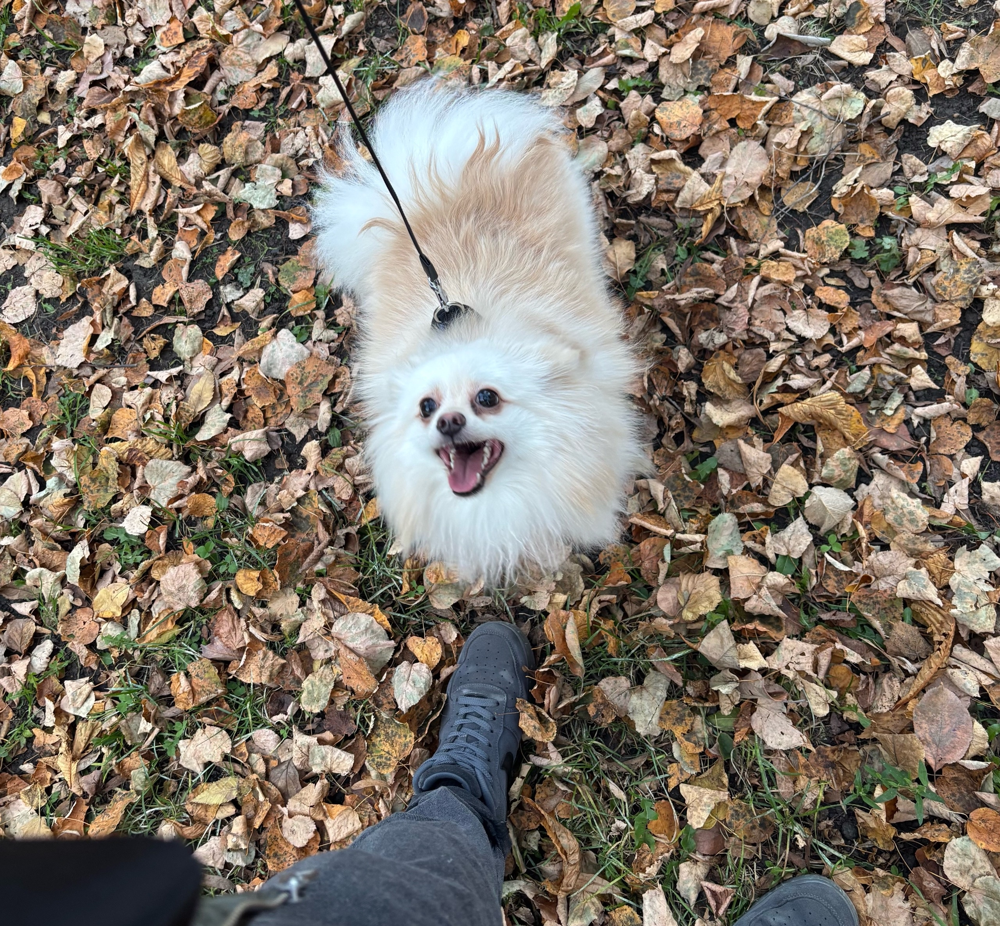

Мой фаворит

Мой пёс Тедди
Тедди — мой самый близкий друг и главный источник хорошего настроения. Он встречает меня каждый день, когда я возвращаюсь домой, и делает даже самый обычный день ярче.
Я выбрал его, потому что животные учат заботе, терпению и искренней привязанности. Тедди — часть моей семьи и моего блога, поэтому эта страница посвящена именно ему.